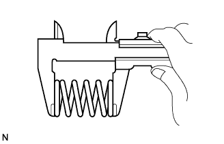
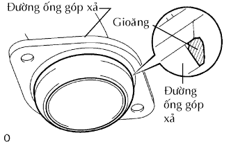
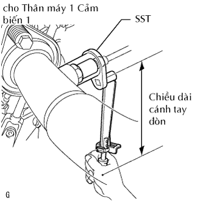

ỐNG XẢ > LẮP |
| 1. LẮP ĐOẠN ỐNG XẢ PHÍA TRƯỚC |
|  |
Dùng một thước kẹp, đo chiều dài tự do của lò xo nén.
Lắp đoạn ống xả phía trước vào cái đỡ ống.
|  |
Lắp một gioăng mới vào ống bên ngoài.
Lắp đoạn ống xả phía trước bằng 2 lò xo nén và 2 bu lông. Hãy xiết chặt xen kẽ các bu lông qua một vài lần.
| 2. LẮP CẢM BIẾN ÔXY CÓ SẤY (cho Thân máy 1 Cảm biến 1) |
|  |
Dùng SST, lắp cảm biến.
 |
Hãy cài 2 kẹp dây điện lên thân xe.
Nối giắc cảm biến.
| 3. LẮP ĐOẠN ỐNG XẢ Ở GIỮA |
Lắp đoạn ống xả ở giữa vào 3 cái đỡ ống.
Lắp một gioăng mới và đoạn ống xả giữa vào đoạn ống xả phía trước bằng 2 bulông và 2 đai ốc. Hãy xiết chặt xen kẽ các bu lông qua một vài lần.
| 4. LẮP ĐUÔI ỐNG XẢ |
Lắp đuôi ống xả vào cái đỡ ống.
Lắp một gioăng mới và đuôi ống xả vào đoạn ống xả ở giữa bằng 2 bulông và 2 đai ốc. Hãy xiết chặt xen kẽ các bu lông qua một vài lần.
| 5. NỐI CÁP VÀO CỰC ÂM ẮC QUY |
| 6. TIẾN HÀNH THIẾT LẬP BAN ĐẦU |
Tiến hành thiết lập ban đầu (Xem trang Kích chuột vào đây).
| 7. KIỂM TRA RÒ RỈ KHÍ XẢ |